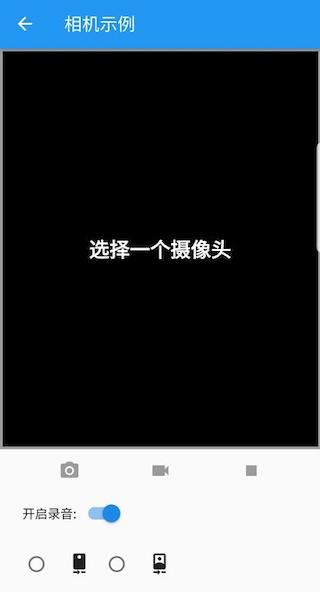

12.6 Texture和PlatformView¶
本节主要介绍原生和Flutter之间如何共享图像，以及如何在Flutter中嵌套原生组件。
12.6.1 Texture（示例：使用摄像头）¶
前面说过Flutter本身只是一个UI系统，对于一些系统能力的调用我们可以通过消息传送机制与原生交互。但是这种消息传送机制并不能覆盖所有的应用场景，比如我们想调用摄像头来拍照或录视频，但在拍照和录视频的过程中我们需要将预览画面显示到我们的Flutter UI中，如果我们要用Flutter定义的消息通道机制来实现这个功能，就需要将摄像头采集的每一帧图片都要从原生传递到Flutter中，这样做代价将会非常大，因为将图像或视频数据通过消息通道实时传输必然会引起内存和CPU的巨大消耗！为此，Flutter提供了一种基于Texture的图片数据共享机制。
Texture可以理解为GPU内保存将要绘制的图像数据的一个对象，Flutter engine会将Texture的数据在内存中直接进行映射（而无需在原生和Flutter之间再进行数据传递），Flutter会给每一个Texture分配一个id，同时Flutter中提供了一个Texture组件，Texture构造函数定义如下：
const Texture({
Key key,
@required this.textureId,
})
Texture 组件正是通过textureId与Texture数据关联起来；在Texture组件绘制时，Flutter会自动从内存中找到相应id的Texture数据，然后进行绘制。可以总结一下整个流程：图像数据先在原生部分缓存，然后在Flutter部分再通过textureId和缓存关联起来，最后绘制由Flutter完成。
如果我们作为一个插件开发者，我们在原生代码中分配了textureId，那么在Flutter侧使用Texture组件时要如何获取textureId呢？这又回到了之前的内容了，textureId完全可以通过MethodChannel来传递。
另外，值得注意的是，当原生摄像头捕获的图像发生变化时，Texture 组件会自动重绘，这不需要我们写任何Dart 代码去控制。
Texture用法¶
如果我们要手动实现一个相机插件，和前面几节介绍的“获取剩余电量”插件的步骤一样，需要分别实现原生部分和Flutter部分。考虑到大多数读者可能并非同时既了解Android开发，又了解iOS开发，如果我们再花大量篇幅来介绍不同端的实现可能会没什么意义，另外，由于Flutter官方提供的相机（camera）插件和视频播放（video_player）插件都是使用Texture来实现的，它们本身就是Texture非常好的示例，所以在本书中将不会再介绍使用Texture的具体流程了，读者有兴趣查看camera和video_player的实现代码。下面我们重点介绍一下如何使用camera和video_player。
相机示例¶
下面我们看一下camera包自带的一个示例，它包含如下功能：
可以拍照，也可以拍视频，拍摄完成后可以保存；排号的视频可以播放预览。
可以切换摄像头（前置摄像头、后置摄像头、其它）
可以显示已经拍摄内容的预览图。
下面我们看一下具体代码：
首先，依赖camera插件的最新版，并下载依赖。
dependencies: ... //省略无关代码 camera: ^0.5.2+2
在
main方法中获取可用摄像头列表。void main() async { // 获取可用摄像头列表，cameras为全局变量 cameras = await availableCameras(); runApp(MyApp()); }
构建UI。现在我们构建如图12-4的测试界面：
 线面是完整的代码：
import 'package:camera/camera.dart'; import 'package:flutter/material.dart'; import '../common.dart'; import 'dart:async'; import 'dart:io'; import 'package:path_provider/path_provider.dart'; import 'package:video_player/video_player.dart'; //用于播放录制的视频 /// 获取不同摄像头的图标（前置、后置、其它） IconData getCameraLensIcon(CameraLensDirection direction) { switch (direction) { case CameraLensDirection.back: return Icons.camera_rear; case CameraLensDirection.front: return Icons.camera_front; case CameraLensDirection.external: return Icons.camera; } throw ArgumentError('Unknown lens direction'); } void logError(String code, String message) => print('Error: $code\nError Message: $message'); // 示例页面路由 class CameraExampleHome extends StatefulWidget { @override _CameraExampleHomeState createState() { return _CameraExampleHomeState(); } } class _CameraExampleHomeState extends State<CameraExampleHome> with WidgetsBindingObserver { CameraController controller; String imagePath; // 图片保存路径 String videoPath; //视频保存路径 VideoPlayerController videoController; VoidCallback videoPlayerListener; bool enableAudio = true; @override void initState() { super.initState(); // 监听APP状态改变，是否在前台 WidgetsBinding.instance.addObserver(this); } @override void dispose() { WidgetsBinding.instance.removeObserver(this); super.dispose(); } @override void didChangeAppLifecycleState(AppLifecycleState state) { // 如果APP不在在前台 if (state == AppLifecycleState.inactive) { controller?.dispose(); } else if (state == AppLifecycleState.resumed) { // 在前台 if (controller != null) { onNewCameraSelected(controller.description); } } } final GlobalKey<ScaffoldState> _scaffoldKey = GlobalKey<ScaffoldState>(); @override Widget build(BuildContext context) { return Scaffold( key: _scaffoldKey, appBar: AppBar( title: const Text('相机示例'), ), body: Column( children: <Widget>[ Expanded( child: Container( child: Padding( padding: const EdgeInsets.all(1.0), child: Center( child: _cameraPreviewWidget(), ), ), decoration: BoxDecoration( color: Colors.black, border: Border.all( color: controller != null && controller.value.isRecordingVideo ? Colors.redAccent : Colors.grey, width: 3.0, ), ), ), ), _captureControlRowWidget(), _toggleAudioWidget(), Padding( padding: const EdgeInsets.all(5.0), child: Row( mainAxisAlignment: MainAxisAlignment.start, children: <Widget>[ _cameraTogglesRowWidget(), _thumbnailWidget(), ], ), ), ], ), ); } /// 展示预览窗口 Widget _cameraPreviewWidget() { if (controller == null || !controller.value.isInitialized) { return const Text( '选择一个摄像头', style: TextStyle( color: Colors.white, fontSize: 24.0, fontWeight: FontWeight.w900, ), ); } else { return AspectRatio( aspectRatio: controller.value.aspectRatio, child: CameraPreview(controller), ); } } /// 开启或关闭录音 Widget _toggleAudioWidget() { return Padding( padding: const EdgeInsets.only(left: 25), child: Row( children: <Widget>[ const Text('开启录音:'), Switch( value: enableAudio, onChanged: (bool value) { enableAudio = value; if (controller != null) { onNewCameraSelected(controller.description); } }, ), ], ), ); } /// 显示已拍摄的图片/视频缩略图。 Widget _thumbnailWidget() { return Expanded( child: Align( alignment: Alignment.centerRight, child: Row( mainAxisSize: MainAxisSize.min, children: <Widget>[ videoController == null && imagePath == null ? Container() : SizedBox( child: (videoController == null) ? Image.file(File(imagePath)) : Container( child: Center( child: AspectRatio( aspectRatio: videoController.value.size != null ? videoController.value.aspectRatio : 1.0, child: VideoPlayer(videoController)), ), decoration: BoxDecoration( border: Border.all(color: Colors.pink)), ), width: 64.0, height: 64.0, ), ], ), ), ); } /// 相机工具栏 Widget _captureControlRowWidget() { return Row( mainAxisAlignment: MainAxisAlignment.spaceEvenly, mainAxisSize: MainAxisSize.max, children: <Widget>[ IconButton( icon: const Icon(Icons.camera_alt), color: Colors.blue, onPressed: controller != null && controller.value.isInitialized && !controller.value.isRecordingVideo ? onTakePictureButtonPressed : null, ), IconButton( icon: const Icon(Icons.videocam), color: Colors.blue, onPressed: controller != null && controller.value.isInitialized && !controller.value.isRecordingVideo ? onVideoRecordButtonPressed : null, ), IconButton( icon: const Icon(Icons.stop), color: Colors.red, onPressed: controller != null && controller.value.isInitialized && controller.value.isRecordingVideo ? onStopButtonPressed : null, ) ], ); } /// 展示所有摄像头 Widget _cameraTogglesRowWidget() { final List<Widget> toggles = <Widget>[]; if (cameras.isEmpty) { return const Text('没有检测到摄像头'); } else { for (CameraDescription cameraDescription in cameras) { toggles.add( SizedBox( width: 90.0, child: RadioListTile<CameraDescription>( title: Icon(getCameraLensIcon(cameraDescription.lensDirection)), groupValue: controller?.description, value: cameraDescription, onChanged: controller != null && controller.value.isRecordingVideo ? null : onNewCameraSelected, ), ), ); } } return Row(children: toggles); } String timestamp() => DateTime.now().millisecondsSinceEpoch.toString(); void showInSnackBar(String message) { _scaffoldKey.currentState.showSnackBar(SnackBar(content: Text(message))); } // 摄像头选中回调 void onNewCameraSelected(CameraDescription cameraDescription) async { if (controller != null) { await controller.dispose(); } controller = CameraController( cameraDescription, ResolutionPreset.high, enableAudio: enableAudio, ); controller.addListener(() { if (mounted) setState(() {}); if (controller.value.hasError) { showInSnackBar('Camera error ${controller.value.errorDescription}'); } }); try { await controller.initialize(); } on CameraException catch (e) { _showCameraException(e); } if (mounted) { setState(() {}); } } // 拍照按钮点击回调 void onTakePictureButtonPressed() { takePicture().then((String filePath) { if (mounted) { setState(() { imagePath = filePath; videoController?.dispose(); videoController = null; }); if (filePath != null) showInSnackBar('图片保存在 $filePath'); } }); } // 开始录制视频 void onVideoRecordButtonPressed() { startVideoRecording().then((String filePath) { if (mounted) setState(() {}); if (filePath != null) showInSnackBar('正在保存视频于 $filePath'); }); } // 终止视频录制 void onStopButtonPressed() { stopVideoRecording().then((_) { if (mounted) setState(() {}); showInSnackBar('视频保存在: $videoPath'); }); } Future<String> startVideoRecording() async { if (!controller.value.isInitialized) { showInSnackBar('请先选择一个摄像头'); return null; } // 确定视频保存的路径 final Directory extDir = await getApplicationDocumentsDirectory(); final String dirPath = '${extDir.path}/Movies/flutter_test'; await Directory(dirPath).create(recursive: true); final String filePath = '$dirPath/${timestamp()}.mp4'; if (controller.value.isRecordingVideo) { // 如果正在录制，则直接返回 return null; } try { videoPath = filePath; await controller.startVideoRecording(filePath); } on CameraException catch (e) { _showCameraException(e); return null; } return filePath; } Future<void> stopVideoRecording() async { if (!controller.value.isRecordingVideo) { return null; } try { await controller.stopVideoRecording(); } on CameraException catch (e) { _showCameraException(e); return null; } await _startVideoPlayer(); } Future<void> _startVideoPlayer() async { final VideoPlayerController vcontroller = VideoPlayerController.file(File(videoPath)); videoPlayerListener = () { if (videoController != null && videoController.value.size != null) { // Refreshing the state to update video player with the correct ratio. if (mounted) setState(() {}); videoController.removeListener(videoPlayerListener); } }; vcontroller.addListener(videoPlayerListener); await vcontroller.setLooping(true); await vcontroller.initialize(); await videoController?.dispose(); if (mounted) { setState(() { imagePath = null; videoController = vcontroller; }); } await vcontroller.play(); } Future<String> takePicture() async { if (!controller.value.isInitialized) { showInSnackBar('错误: 请先选择一个相机'); return null; } final Directory extDir = await getApplicationDocumentsDirectory(); final String dirPath = '${extDir.path}/Pictures/flutter_test'; await Directory(dirPath).create(recursive: true); final String filePath = '$dirPath/${timestamp()}.jpg'; if (controller.value.isTakingPicture) { // A capture is already pending, do nothing. return null; } try { await controller.takePicture(filePath); } on CameraException catch (e) { _showCameraException(e); return null; } return filePath; } void _showCameraException(CameraException e) { logError(e.code, e.description); showInSnackBar('Error: ${e.code}\n${e.description}'); } }
如果代码运行遇到困难，请直接查看camera官方文档。
12.6.2 PlatformView （示例：WebView）¶
如果我们在开发过程中需要使用一个原生组件，但这个原生组件在Flutter中很难实现时怎么办（如webview）？这时一个简单的方法就是将需要使用原生组件的页面全部用原生实现，在flutter中需要打开该页面时通过消息通道打开这个原生的页面。但是这种方法有一个最大的缺点，就是原生组件很难和Flutter组件进行组合。
在 Flutter 1.0版本中，Flutter SDK中新增了AndroidView和UIKitView 两个组件，这两个组件的主要功能就是将原生的Android组件和iOS组件嵌入到Flutter的组件树中，这个功能是非常重要的，尤其是对一些实现非常复杂的组件，比如webview，这些组件原生已经有了，如果Flutter中要用，重新实现的话成本将非常高，所以如果有一种机制能让Flutter共享原生组件，这将会非常有用，也正因如此，Flutter才提供了这两个组件。
由于AndroidView和UIKitView 是和具体平台相关的，所以称它们为PlatformView。需要说明的是将来Flutter支持的平台可能会增多，则相应的PlatformView也将会变多。那么如何使用Platform View呢？我们以Flutter官方提供的webview_flutter插件为例：
注意，在本书写作之时，webview_flutter仍处于预览阶段，如您想在项目中使用它，请查看一下webview_flutter插件最新版本及动态。
原生代码中注册要被Flutter嵌入的组件工厂，如webview_flutter插件中Android端注册webview插件代码：
public static void registerWith(Registrar registrar) { registrar.platformViewRegistry().registerViewFactory("webview", WebViewFactory(registrar.messenger())); }
WebViewFactory的具体实现请参考webview_flutter插件的实现源码，在此不再赘述。在Flutter中使用；打开Flutter中文社区首页。
class PlatformViewRoute extends StatelessWidget { @override Widget build(BuildContext context) { return WebView( initialUrl: "https://flutterchina.club", javascriptMode: JavascriptMode.unrestricted, ); } }
运行效果如图12-5所示：
注意，使用PlatformView的开销是非常大的，因此，如果一个原生组件用Flutter实现的难度不大时，我们应该首选Flutter实现。
另外，PlatformView的相关功能在作者写作时还处于预览阶段，可能还会发生变化，因此，读者如果需要在项目中使用的话，应查看一下最新的文档。